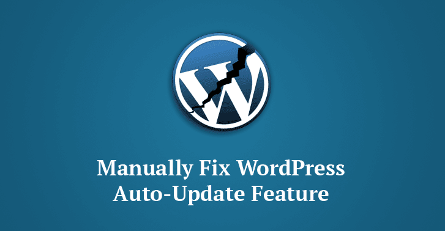

12 Fev 2018

A atualização WordPress interrompe o recurso de atualização automática - aplique atualização manual
Os administradores do WordPress estão novamente com problemas.
O WordPress versão 4.9.3 foi lançado no início desta semana com patches para um total de 34 vulnerabilidades, mas, infelizmente, a nova versão quebrou o mecanismo de atualização automática para milhões de sites do WordPress.
A equipe do WordPress emitiu uma nova atualização de manutenção, o WordPress 4.9.4 , para corrigir esse erro grave, que os administradores do WordPress precisam instalar manualmente.De acordo com o site de segurança do WordFence , quando o WordPress CMS tenta determinar se o site precisa instalar uma versão atualizada, se disponível, um erro PHP interrompe o processo de atualização automática.e não for atualizado manualmente para a versão 4.9.4 mais recente, o erro deixaria seu site no WordPress 4.9.3 para sempre, deixando-o vulnerável a futuros problemas de segurança.
Veja o que o desenvolvedor do WordPress Dion Hulse explicou sobre o bug: "# 43103-core visou reduzir o número de chamadas de API que são feitas quando a tarefa cron de atualização automática é executada. Infelizmente, devido a erro humano, o commit final não teve o efeito pretendido e, em vez disso, desencadeia um erro fatal como nem todas as dependências de find_core_auto_update () são atendidas. Por qualquer motivo, o erro fatal não foi descoberto antes da liberação de 4.9.3 - foram algumas horas após a liberação quando descobertas ".
A questão já foi corrigida, mas, como relatado, a correção não será instalada automaticamente. Assim, os administradores do WordPress estão sendo instados a atualizar a versão mais recente do WordPress manualmente para garantir que eles serão protegidos contra futuras vulnerabilidades. Para atualizar manualmente suas instalações do WordPress, os usuários de admin podem entrar no seu site WordPress e visitar Painel → Atualizações e, em seguida, clicar em "Atualizar agora". Após a atualização, verifique se a sua versão principal do WordPress é 4.9.4.
No entanto, nem todos os sites que estão sendo atualizados para a atualização incorreta relataram ter visto esse erro. Alguns usuários viram seu site instalado as atualizações (4.9.3 e 4.9.4) automaticamente.
Além disso, a empresa lançou duas novas atualizações de manutenção nesta semana, mas nenhuma delas inclui um patch de segurança para uma vulnerabilidade severa do DoS do nível de aplicação divulgada na semana passada que poderia permitir que alguém abaixasse a maioria dos sites do WordPress mesmo com uma única máquina. Uma vez que os sites do WordPress são muitas vezes alvo de hackers devido à sua grande popularidade no mercado do sistema de gerenciamento de conteúdo (CMS), os administradores são sempre obrigados a manter seus softwares e plugins atualizados.
A equipe do WordPress emitiu uma nova atualização de manutenção, o WordPress 4.9.4 , para corrigir esse erro grave, que os administradores do WordPress precisam instalar manualmente.De acordo com o site de segurança do WordFence , quando o WordPress CMS tenta determinar se o site precisa instalar uma versão atualizada, se disponível, um erro PHP interrompe o processo de atualização automática.e não for atualizado manualmente para a versão 4.9.4 mais recente, o erro deixaria seu site no WordPress 4.9.3 para sempre, deixando-o vulnerável a futuros problemas de segurança.
Veja o que o desenvolvedor do WordPress Dion Hulse explicou sobre o bug: "# 43103-core visou reduzir o número de chamadas de API que são feitas quando a tarefa cron de atualização automática é executada. Infelizmente, devido a erro humano, o commit final não teve o efeito pretendido e, em vez disso, desencadeia um erro fatal como nem todas as dependências de find_core_auto_update () são atendidas. Por qualquer motivo, o erro fatal não foi descoberto antes da liberação de 4.9.3 - foram algumas horas após a liberação quando descobertas ".
A questão já foi corrigida, mas, como relatado, a correção não será instalada automaticamente. Assim, os administradores do WordPress estão sendo instados a atualizar a versão mais recente do WordPress manualmente para garantir que eles serão protegidos contra futuras vulnerabilidades. Para atualizar manualmente suas instalações do WordPress, os usuários de admin podem entrar no seu site WordPress e visitar Painel → Atualizações e, em seguida, clicar em "Atualizar agora". Após a atualização, verifique se a sua versão principal do WordPress é 4.9.4.
No entanto, nem todos os sites que estão sendo atualizados para a atualização incorreta relataram ter visto esse erro. Alguns usuários viram seu site instalado as atualizações (4.9.3 e 4.9.4) automaticamente.
Além disso, a empresa lançou duas novas atualizações de manutenção nesta semana, mas nenhuma delas inclui um patch de segurança para uma vulnerabilidade severa do DoS do nível de aplicação divulgada na semana passada que poderia permitir que alguém abaixasse a maioria dos sites do WordPress mesmo com uma única máquina. Uma vez que os sites do WordPress são muitas vezes alvo de hackers devido à sua grande popularidade no mercado do sistema de gerenciamento de conteúdo (CMS), os administradores são sempre obrigados a manter seus softwares e plugins atualizados.